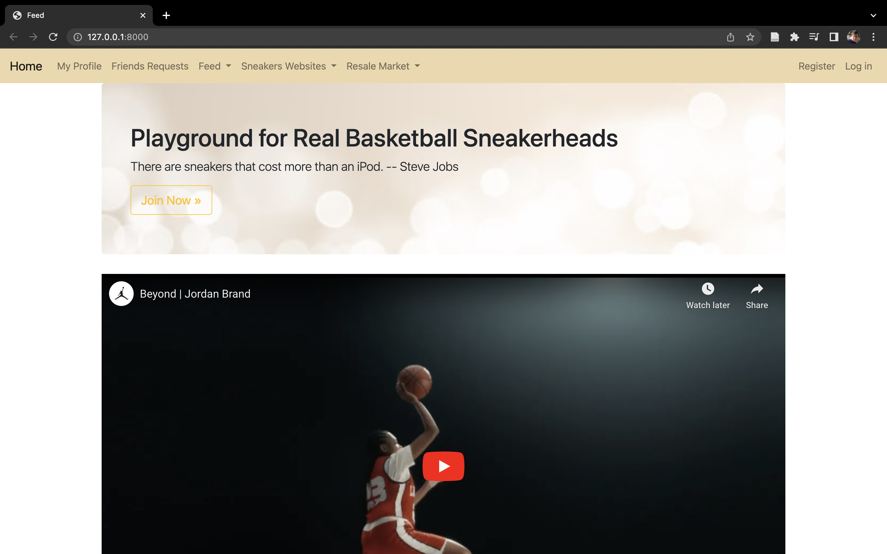
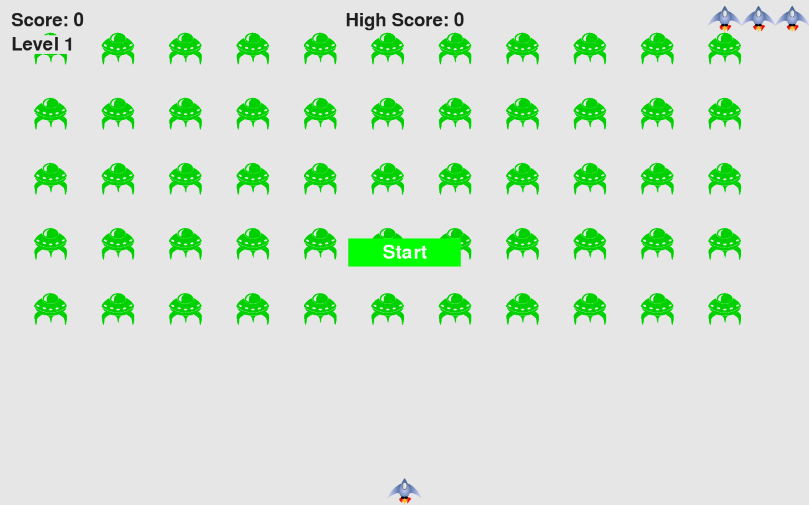

In this project, I built a social media website for sneakers collection. In the website, users
are able to make friends, post, like, and comment on other users' posts. It is also a guide for
users who want to explore more of the world of sneakers. The site is built up full stack from
the no-SQL database using Python all the way up to the styling with HTML, CSS, and JavaScript.


In this project, our database team created a thorough database design and analysis for Texas
Hunger Initiative which helps children in Texas to be fed in the summer. We have created ERD,
data dictionary, SQL scripts for DDL and queries, and an analysis dashboard with Excel.

This is my Tableau Public portfolio that has 2 data visulization projects. One is about Top 100
Movies analysis. The other is a dashboard about US Homeless Veterans Population.

In this project, our business intelligence team used R to analyze online video game sales in
history. We came up with important business questions and analyzed the dataset with machine
learning concepts such as decision tree and regression analysis.

In this project, I created the original Alien Invasion game with the help of PyGame which is
a library in Python. Instead of focusing on analytics, this game is built with the concept of
Object Oriented Programming. The player will play through each level with the score being
recorded and have 3 lives.

WeatherApp is a simple web application that provides current weather information for any city. The app fetches data from a weather API and displays the temperature, humidity, and wind speed.

This To-Do List App is a simple, interactive task manager that allows users to add, check/uncheck, and delete tasks. The app uses local storage to save tasks, ensuring they persist even after the page is reloaded.